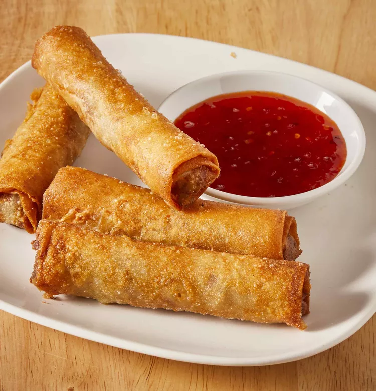

Filipino Lumpia
Disclaimer: this is only an exercise in
creating a webpage. All content belongs to
All Recipes
and you can find the original recipe
here.

Description
My stepmother is Filipino. I would watch her make these on
special occasions. She never measured what she did, but I
think I've got the knack of it. This is one of the best
Filipino foods next to pancit - and unfortunately, I don't
know how to make that!! You can find lumpia wrappers in
Asian food stores wherever they keep their frozen food,
and also (if you're lucky) in very large supermarkets.
| Prep time: |
1 hour |
| Cook time: |
10 mins |
| Total time: |
1 hour 10 mins |
| Servings: |
6 |
Ingredients
- 1 package (340 g) lumpia wrappers
- 450 g ground beef
- ½ 225 g ground pork
- ⅓ cup finely chopped onion
- ⅓ cup finely chopped green bell pepper
- ⅓ cup finely chopped carrot
- 1 quart oil for frying
Directions
- Make sure the lumpia wrappers are completely
thawed. Lay several out on a clean dry surface
and cover with a damp towel. The wrappers are
very thin and the edges will dry out quickly.
- In a medium bowl, blend together the ground beef
and pork, onion, green pepper and carrot. Place
about 2 tablespoons of the meat mixture along the
center of the wrapper. The filling should be no
bigger around than your thumb or the wrapper will
burn before the meat is cooked. Fold one edge of
the wrapper over to the other. Fold the outer edges
in slightly, then continue to roll into a
cylinder. Wet your finger, and moisten the edge to
seal. Repeat with the remaining wrappers and
filling, keeping finished lumpias covered to
prevent drying. This is a good time to recruit
a friend or loved one to make the job less
repetitive!
- Heat oil in a 23 cm skillet at medium to medium
high heat until oil is 170 to 175 degrees C. Fry
3-4 lumpia at a time. It should only take about
2-3 minutes for each side. The lumpia will be
nicely browned when done. Drain on paper towels.
- You can cut each lumpia into thirds for parties,
if you like. In the Philippines, lumpia was eaten
with banana ketchup, but I've never seen it sold
in America.